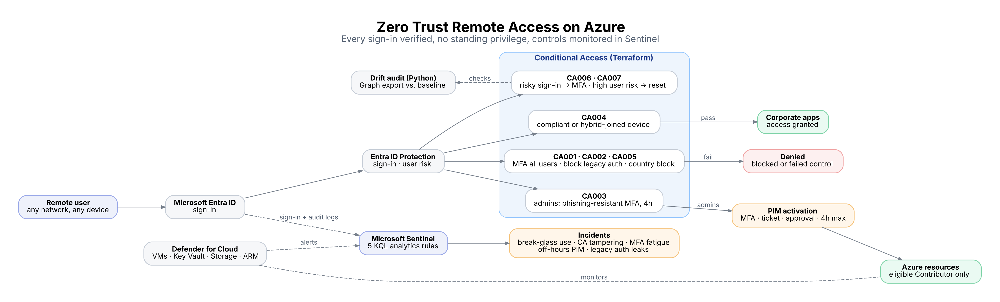

Zero Trust remote access for a Microsoft cloud estate, written as code: a Conditional Access baseline, eligible-only admin access through PIM, and Sentinel detections that watch the controls themselves.

Remote access is where identity attacks land first: password spray, MFA fatigue, token theft and legacy protocols that skip MFA entirely. This project turns a Zero Trust remote access design into Terraform, so the controls are reviewable, repeatable and easy to roll back.
The Conditional Access baseline requires MFA for everyone, blocks legacy authentication and disallowed countries, requires compliant devices for remote users, and demands phishing-resistant MFA with a 4-hour sign-in frequency for privileged roles. Risky sign-ins and high-risk users are challenged automatically. Two emergency access accounts are excluded from every policy, and every policy ships in report-only mode first.
Admin access to Azure is eligible-only through PIM. Activation needs MFA, a justification, a ticket and group approval, and it expires after four hours. Entra logs stream to Microsoft Sentinel, where five KQL rules watch the controls themselves. A Python audit tool compares a live Microsoft Graph export with the baseline to catch drift and exclusion creep.